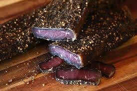

Biltong

Description
This is a dry meat that no known South African can live without.
This recipe yields roughly 5 servings, if you feel like sharing.
Ingredients
- 1kg Topside Steak
- 18g salt
- 2g black pepper
- 1g brown sugar
- 4g coriander
- 50/50 vinegar and Worcestershire sauce mixture
Directions
- If you prefer a cut with a fat rind make use of Silverside or Topside if you want a lean cut. Cut into 2 – 2,5cm strips thick. Remember to cut along with the grain.
- Sprinkle the strips of meat with the vinegar and Worcestershire sauce mixture on both sides. Make sure to coat the meat thoroughly. Then coat the meat both sides with the spice mixture and place in a large tray.
- Place the tray in the fridge and let the meat marinade in the spice and vinegar mixture for about 12 hours. Mix the meat thoroughly and let it marinade for another 12 hours.
- After you have pickled the meat for 24 hours hang directly in a well ventilated area or in front of a fan. Please make sure that the meat is hanging in a cool area with no warm air.
Do not rinse or wipe off any of the spice and liquid mixture before you hang the Biltong to dry.
Check the meat after 4 – 5 days depending on how moist you want the inside to be.
Home Page